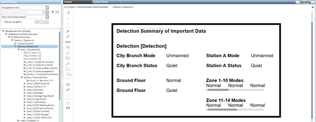

Creating a Graphic Template
Scenario
You have a device based on a function and want to view details of the subpoints of that device. The devices are resolved from the Management View.
In this example, you want to click your Detection node in System Browser and have a graphic open in the Primary pane and display information from the objects below it. We will create the example below:
- For background information on Graphic Templates, see Graphic Templates.
- For background information on Functions, see Object Models & Functions
Prerequisites
- You have completed the following from the Creating New Function workflow:
- You created a Function folder in the L4 Project Library.
- You created a new function and, for the sake of this example, called it DetectFunction.
- You have associated the objects to the function. See Object Configuration.

In this workflow you will apply evaluations on the text string property of the Text element to:
- Resolve the parent node name from the Management View.
- Reference properties from the object model.
- Replicate and display the Mode property from the zones by resolving the properties from the Automatic Zone’s1-10 and 11-14.
Overview
1 | Create a Graphic Template |